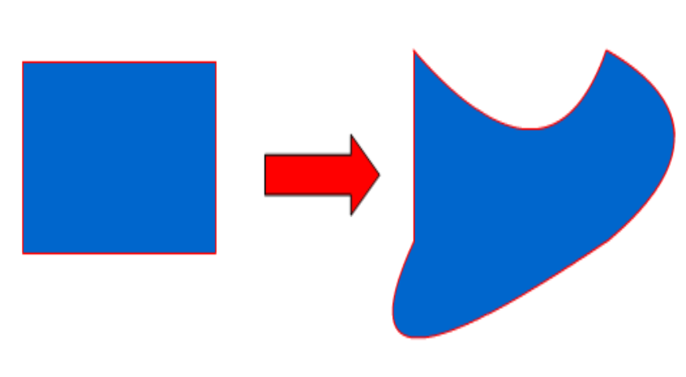
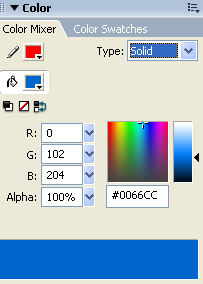
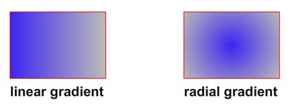

3.1 Manipulasi obyek shape
Obyek Shape dapat dibentuk atau dirubah dari bentuk dasar yang sederhana menjadi bentuk yang disesuaikan dengan kebutuhan untuk animasi dengan memanipulasi Shape menggunakan fasilitas yang ada di flash. Fasilitas itu diantaranya Selection tool serta fasiltas untuk pewarnaan.
Selection Tool merupakan tool untuk memilih obyek. Tanda suatu bidang yang sudah diseleksi adalah terdapat titik-titik dalam bidang tersebut. Selection Tool pada flash hanya bisa menyeleksi suatu bidang atau obyek dan tidak bisa membuat seleksi pada daerah kosong dalam stage.
Selection tool juga bisa digunakan untuk menggeser obyek. Caranya klik obyek yang ingin dipindah kemudian geser ketempat yang diinginkan.
Fungsi lain dari selection tool adalah untuk merubah bentuk obyek. Ada beberapa cara dalam merubah bentuk obyek dengan menggunakan selection tool. Cara yang pertama, klik bagian tepi dari suatu obyek kemudian geser ke arah yang diinginkan

Pengaturan dari warna gradien dapat dilakukan pada panel fill untuk radial gradient. Warna gradien juga bisa di akses dengan cara klik windows > color mixer atau tekan tombol kombinasi shift + F9. Sehingga akan muncul jendela sebagai berikut :

Dalam panel tersebut terdapat dua pilihan gradient yaitu linear gradient dan radial gradient. Linear gradient adalah gradient yang perubahan warnanya mendatar mengikuti garis lurus. Sedangkan radial gradient adalah gradien yang warnanya berubah membentuk suatu lingkaran.

Ketika menggunakan gradient sebagai warna isi kita bisa mengatur orientasi dari warna tersebut. Bila menggunakan linear gradient kita bisa menentukan horizontal vertikal ataupun diagonal. Jika kita menggunakan paint bucket untuk memberi warna dengan orientasi vertikal kita hanya perlu menggeser mouse secara vertikal dari atas ke bawah melewati bentuk yang ingin kita beri warna atau sebaliknya dari bawah ke atas. Hal sama juga berlaku untuk horisontal kita hanya perlu menggeser mouse secara horisontal dari kiri ke kanan atau sebaliknya. Bila menggunakan Radial Gradient kita bisa menentukan letak titik pusatnya. Jika kita menggunakan paint bucket tool untuk memberi warna maka titik tempat kita mengklik paint bucket tool tersebut menjadi titik pusat dari radial gradient.